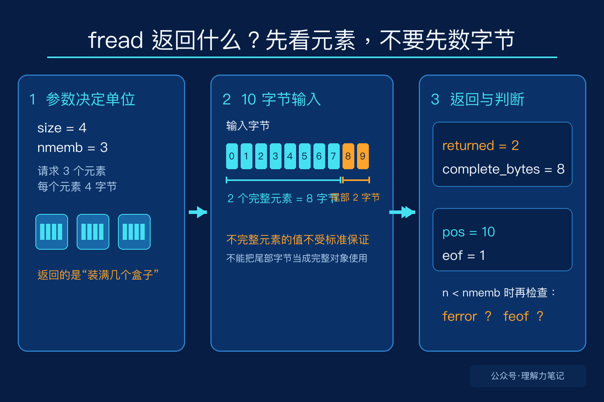

看到 fread 的返回值时，最容易产生一个误会：把它当成“读了多少字节”。其实它返回的是成功读取的元素数。元素的大小由第二个参数 size 决定，元素的数量由第三个参数 nmemb 决定。
所以这句代码：
表达的是“最多读取 3 个元素，每个元素 4 字节”。如果 n 等于 2，能确定的是有 2 个完整元素被成功读取，也就是至少 8 个字节属于完整元素。n 本身不是字节数。
先记住一句话：
fread返回元素数，不返回字节数。n < nmemb时，要再检查ferror和feof，才能知道是读取错误，还是已经到了文件末尾。
这篇文章的实验运行在 macOS 14.8.8、Apple clang 16.0.0，未在 Linux 主机实测。fread 是 ISO C 标准接口，POSIX 也对它补充了流状态和部分读取的说明。
这篇文章怎么读？先看同一份 10 字节输入在两种参数下的结果，再把“元素数”和“字节数”分开，最后看短读应该怎样判断原因。
size 和 nmemb 各自表示什么把输入想成一堆积木，把一个元素想成一个固定大小的盒子。size=4、nmemb=3 就是准备 3 个盒子，每个盒子能装 4 个字节。fread 返回的是装满了几个盒子，而不是搬过来的积木总数。
这个类比只用来说明返回值的单位。真正的程序里，元素可以是结构体、整数或任意对象，fread 按字节复制对象表示，不会理解结构体字段，也不会替你做字节序转换。
如果读取字节流，通常把 size 设为 1：
这时一个元素就是一个字节，返回值恰好可以当作字节数。也正因为如此，很多代码看起来像是在用 fread 返回字节数，实际上只是选择了 size=1。

实验先写入 10 个字节，再用两组参数从头读取。第一组请求 3 个 4 字节元素，第二组请求 10 个 1 字节元素。
输出如下：
第一轮请求 12 个字节，但输入只有 10 个。前 8 个字节组成了 2 个完整元素，所以返回 2。实验中的文件位置已经到了 10，说明剩下的 2 个字节也被读过了，只是它们不足以组成第三个完整元素，不能算进返回值。
这里还有一个容易被忽略的边界：标准不保证“不完整元素”在目标对象中的值。不要因为某次运行看到了那 2 个字节，就把它们当成一个可以直接使用的结构体或整数。需要可靠处理尾部数据时，应该把元素大小设为 1，按字节读取，或者先设计好自己的拼接逻辑。
第二轮把每个元素设成 1 字节，因此返回 10 就是读到的字节数。它刚好读完请求的数量，函数没有因为这次调用遇到 EOF，所以 feof 仍然是 0。EOF 是在继续读取时才会被设置，不是“位置刚好到了文件末尾”就立刻设置。
fread 返回值小于 nmemb，原因只有两类：遇到了 EOF，或者发生了读取错误。代码不能只写成“少读了就是文件结束”，也不能只看 feof。
读取一批结构体时，可以这样处理：
got 表示完整读入的元素数。若业务要求必须得到 count 个完整元素，就应该把 got < count 当成失败或不完整输入，而不是继续使用数组中没有读满的部分。
还要记住两个边界：size 或 nmemb 为 0 时，fread 返回 0，不读取数据；如果一次调用已经返回了完整的 nmemb 个元素，并不能据此判断后面是否还有数据，只有下一次读取才会暴露 EOF。
fread 的接口并不复杂，容易混淆的是返回值的单位。先问自己“我把什么当成一个元素”，再解释返回值，短读和文件末尾的行为就不会混在一起。
fread 的参数、返回值和部分元素规则。本文为公众号「理解力笔记」原创。转载请联系作者，并保留出处。